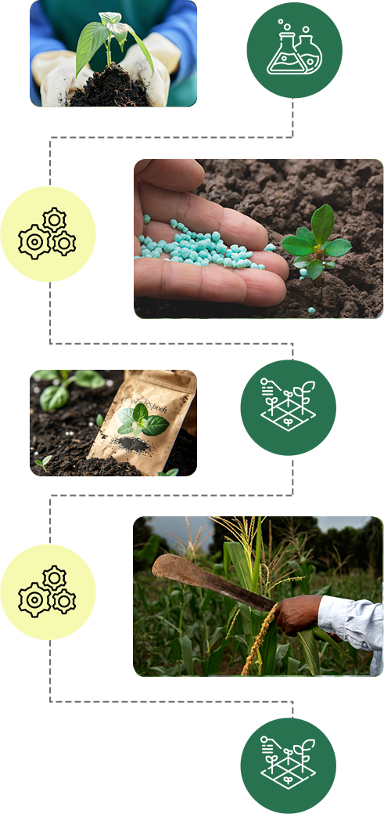

At DLK Fertilizers, we are committed to providing high-quality fertilizers and biostimulants to support farmers in maximizing their yields while maintaining soil health. This guideline introduces our products and how to use them effectively.
From humic acid applications to hydroponic nutrient scheduling, our guidelines are backed by field research and designed for practical, everyday use on the farm.
View Research & Certificates
| Product | Application Rate | Timing | Compatibility |
|---|---|---|---|
| Humic Acid 6 | 2 mL / litre water | All growth stages | Soil & hydroponic |
| Fulvic Acid | 2–3 mL / litre water | All growth stages | Soil & hydroponic |
| Growth Bomb | 1–2 mL / litre water | Vegetative stage | Soil, coco, hydro |
| Notorious Bloom | Per label dosage | Flowering stage | All media |
| Queen Bee | 1 mL / litre water | All growth stages | All media |
| Cal Maggie | 2 mL / litre water | Vegetative & early bloom | Soil & hydro |
| Bud Detox | 5 mL / litre water | Final flush week | All media |
Always shake liquid products well before use. Consult our team for strain-specific or custom dosage recommendations.

Interested in learning more about how DLK Fertilizers can revolutionize your farming practices? Get in touch with us today!